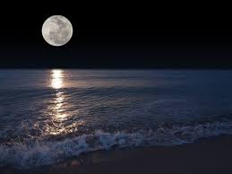
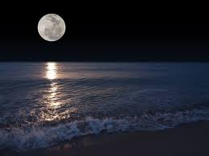

mar
A lua faceira recostou-se no mar,
hipnotizou-se pelas ondas inconstantes
e o brilho das águas,
e assim quis logo o mar, que lhe jurou noites de amor,
Mas sem amarras, o mar era liberto e nada lhe podia prometer !
A lua entristecida resolveu então,
só admirar as intrigantes e misteriosas
águas do mar ...
Entreter-se suas madrugadas com a melodioso som das águas,
E o mar não contentado
tenta conquistar a lua romântica,
e enternecida de ilusões,
a mostrar-se numa exuberância,
chamando-a, e envolvendo com suas ondas insaciáveis...
Sem forças para resistir a lua pergunta :
Para onde mar, queres chegar ?
" Tu lua descobrirás o meu verdadeiro mundo,
e saberás meu verdadeiro amar,
e lá poderemos reinar ... "
...E assim sucede-se o eterno mistério entre a lua e o mar ...
 
